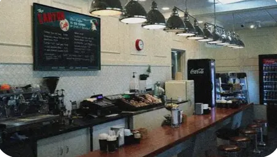

About

When Cindy founded her shop in 2008, it was hard to get attract new customers because of the 2008 recession. But Cindy made her store a comfortable space where people can relax and enjoy a cup of coffee. Many customers have complemented the hanging vines and lavender scent that incases the shop. Cindy has a deal with local colleges to give part-time jobs to some of their students to start building a resume. Cindy’s is open from 8:30 AM to 9:00 PM
Cindy holds open mics on Friday nights starting at 7:00 PM for Karaoke and poem readings for anyone interested. On Saturdays, bands can sign up to play with a payment after the performance